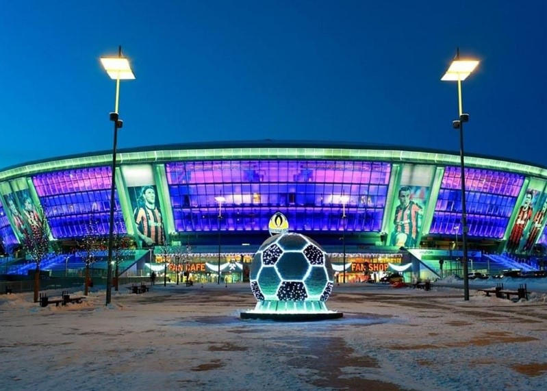
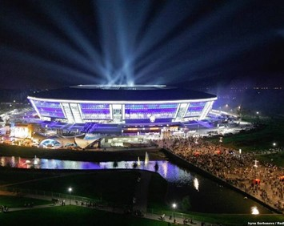

Донбасс Арена – футбольный стадион в Донецке, построенный в 2009 году в парке Ленинского Комсомола. Трибуны этого сооружения могут вмещать до 52 тысяч зрителей. Спонсирована и запланирована арена была лидером команды. Из-за чего она считается домашним стадионом для футбольного клуба Донецка «Шахтёр».
Стадион считается одним из самых красивых во всей Европе. Дизайн «Донбасс Арены» был разработан компания ArupSport, создавшая такие прекрасные сооружения как: «Манчестер Сити» (Англия), «Альянс Арена» (Германия) и «Сидней» (Австралия). Генеральным подрядчиком выступила компания ENKA (Турция). Строительство началось в 2006 году, а завершилось в 2009-м. Для возведения «Арены» в столь короткие сроки на стройплощадке в отдельные периоды было задействовано до 1600 рабочих одновременно!
